quisseh
Hi there. My name is quisseh.I make software, especially video games.
Taipei Itinerary
Seven days in the capital of the beautiful island
Day 1 (2017-02-12)
Morning of February 12 found us airborne; about a dozen hours into a nasty, 22-hour, three-legged flight to Taipei, Taiwan, with short stops in Detroit, Michigan and Tokyo, Japan.
Red eyes, pale faces, swollen feet; several rounds of airplane food rolling in our stomachs. We passed the time talking and watching movies. Caught a glimpse of Mount Fuji as we passed over Japan; officially the largest identifiable object we’ve ever witnessed from 36,000-foot altitude.
Landed on time in Taipei, shortly after the sun went down. Navigating Taoyuan International Airport was surprisingly straightforward; signage was excellent. Walked down the hall to the Bank of Taiwan to exchange currency, then through customs and over to the Kuo-Kuang ticket counter to catch a bus into the city. About an hour later we arrived at Taipei Main Station.
A short walk down through the Zhongzheng District and we finally reached our destination: Backpackers Inn. This turned out to be an excellent hostel. Location is fantastic (across the street from 228 Peace Memorial Park), staff is nice, breakfast is included, WiFi is free. We booked six nights in a standard double room with a private bathroom; very clean with all the usual amenities.
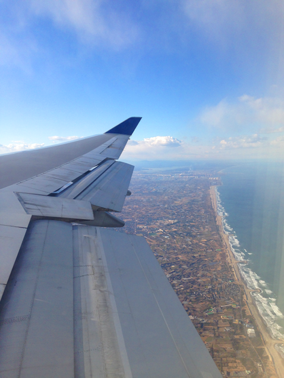Day 2 (2017-02-13)
Got up and went downstairs for breakfast at Beyco’. Had steamed vegetable dumplings and black tea.
Stepping outside the restaurant, we saw Taipei in daylight for the first time; it was a gorgeous, breezy, clear-sky morning. Walked alongside the park toward our first stop, the Presidential Office Building; striking from a distance, a brilliant example of Japanese Baroque architecture. We had an appointment to tour the premises. Our guide took us through several exhibitions, showcasing the history of the island (prehistoric to European discovery, Qing/Japanese/Chinese Nationalist rule, democratization) and its natural landmarks. Fascinating tour.
Back to 228 Peace Memorial Park. Charming little park with a lot to see. Watched turtles sunbathing, koi chasing shadows, a man feeding squirrels, locals practicing tai chi, some guy playing a handpan beautifully. Checked out each of the monuments. Took off our shoes and wrecked our feet on the reflexology path.
Headed southeast toward Liberty Square. Bright white wall topped with deep blue pagoda roof came into view. Behind the wall was a forest, where we were greeted by an adorable sculpture of a red deer on a seesaw. Through the forest we reached the square. Flanking us were the vibrant National Concert Hall and National Theater, ahead was the Chiang Kai-shek Memorial Hall, behind was the Gate of Integrity. It’s hard not to be overwhelmed by the scale and grandeur of the architecture.
Spent some time wandering the square and exploring each of the buildings. There is a museum on the ground floor of the memorial that is particularly interesting; hours could be spent there alone.
Had lunch at Chun Shui Tang, a tea house inside the National Concert Hall. We both had vegetable noodle bowls and shared a side of enoki mushrooms and tofu skin. She had black tea, I had ginger. Everything was perfect.
Next stop was Longshan Temple. Went over to Chiang Kai-shek Memorial Hall Station, bought 2 EasyCards to board the metro.
Side notes
- EasyCards are really neat; can be used for metro, train, bus, taxi, convenience stores, restaurants, etc.
- Taipei MRT is the cleanest, most organized/straightforward/economical metro system we’ve ever used; and the train melodies are adorable.
Took the green line to Ximen Station, then blue line to Longshan Temple Station. Stepped out and walked through Mengxia Park until we reached Longshan Temple: a magnificent historic structure adorned with ornate, colorful wood carvings.
This place is crawling with tourists and locals; everyone lining up to buy incense and offerings, tossing jiaobei blocks looking for answers; everyone chanting hymns, worshipping Buddhist and Taoist deities. For the uninitiated, this can be both bizarre and enchanting. We quietly observed.
From there we wandered into Huaxi Street Night Market. Bright lights, dead animals, stinky tofu, massive snakes, foot masseuses.
Back to Longshan Temple Station. Took the blue line up to Shandao Temple Station. Saw Shandao Temple (Japanese Buddhist temple; largest in Taipei), went through Huashan 1914 Creative Park (a nice place to walk around; plenty to see), then up to Guang Hua Digital Plaza (the largest electronics store we’ve ever been to; worth visiting).
Short walk to Zhongxiao Xinsheng Station. Took the blue line back to Ximen Station. We spent the rest of the evening in Ximending: Times Square of Taipei. Loud music, massive glowing advertisements, people everywhere, street performances, every store/restaurant imaginable; an exciting place to be, even just for people watching.
Had dinner at Ah Mao Risotto. They have a sleepy golden retriever you can gush over while you eat. We both had pumpkin squash risotto; it was decent.
Walked back to Backpackers Inn once we realized how late it was. Bedtime.
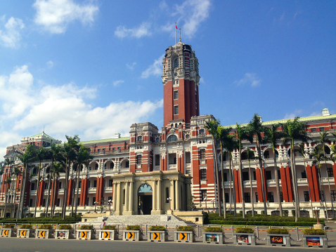 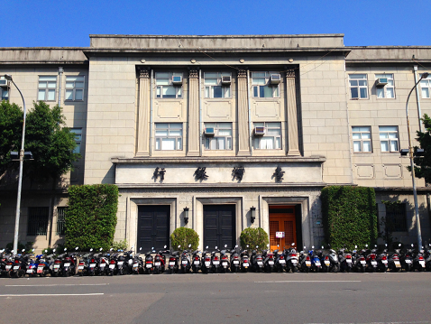 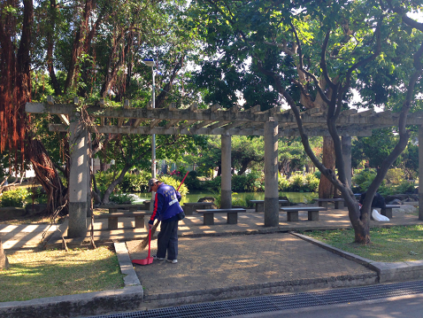 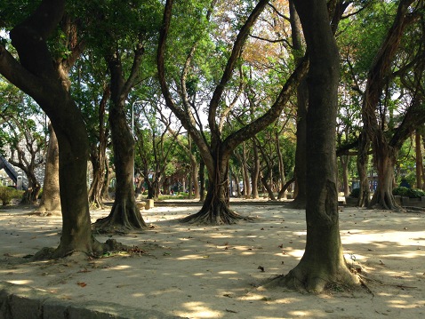 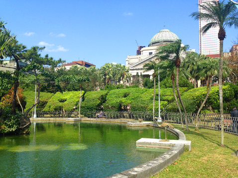 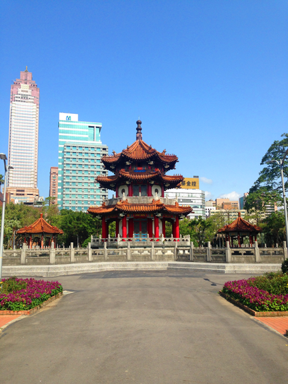 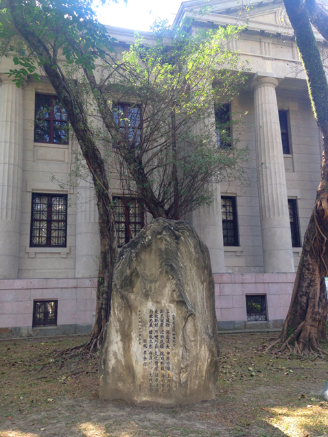 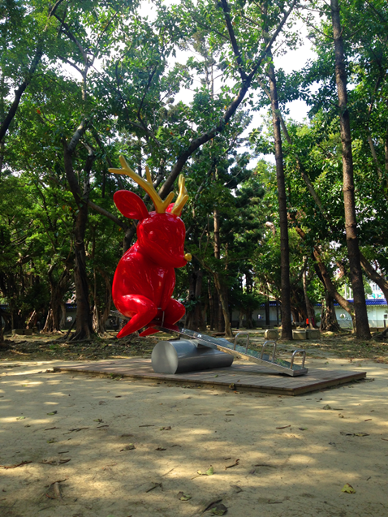 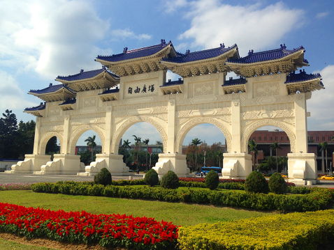 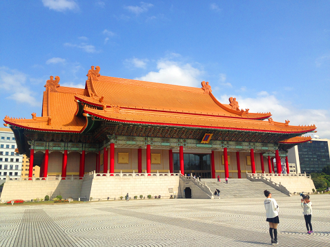 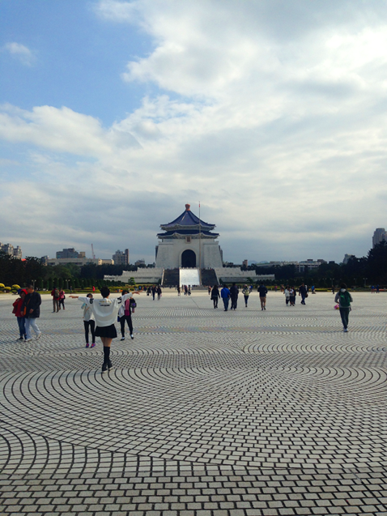 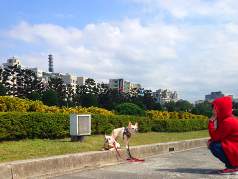 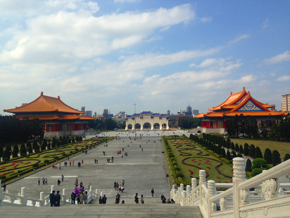 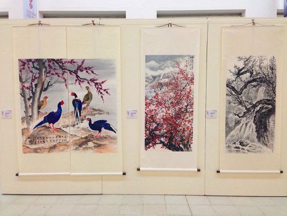 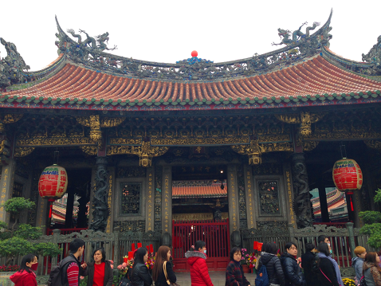 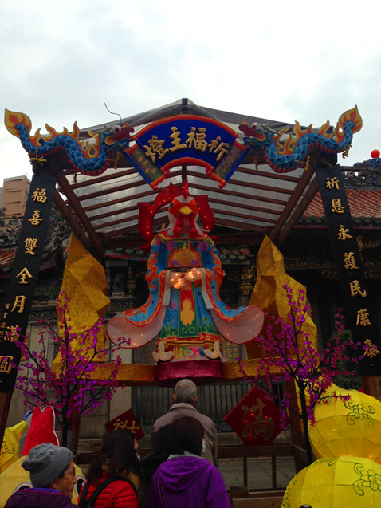 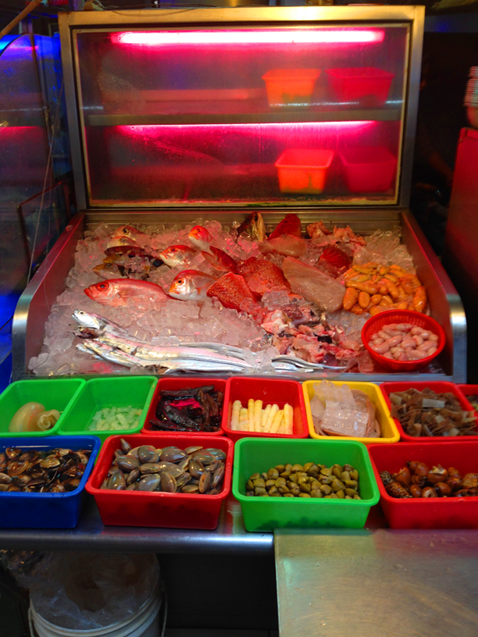 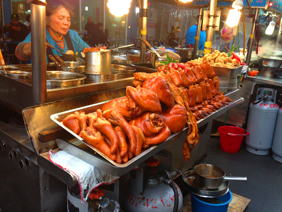 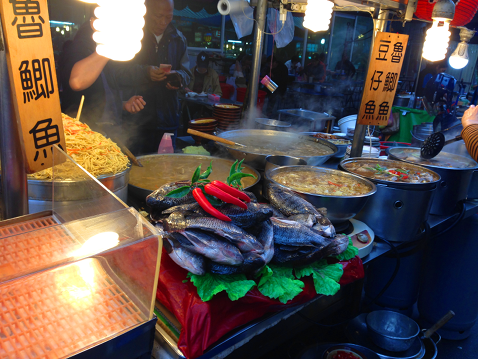 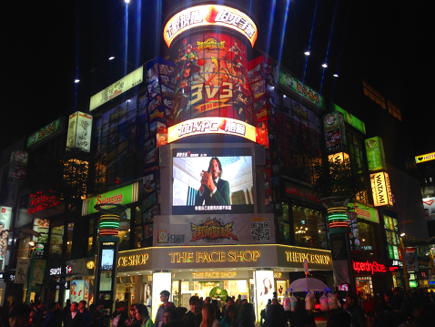Day 3 (2017-02-14)
Another beautiful morning, another walk through 228 Peace Memorial Park. Went inside NTU Hospital Station, took the red line over to Daan Park Station.
Daan Forest Park is the Central Park of Taipei. Sprawling intertwining paths through acres of green; palms, banyans, bamboo forests; ponds, pavilions, bike lanes; a bandshell, a skating rink, a playground; all surrounded by gorgeous high-rise apartments you could never afford. We sat on a bench for a while to enjoy the air. Saw some kiddies on a field trip, an older man recycling palm husks, more tai chi practice, a young hawk having a mouse lunch.
Back to Daan Park Station. Red line to Taipei 101/World Trade Center Station. Walked out, looked up, realized how utterly enormous the Taipei 101 building is. Inside is just as impressive; open and airy, white stone, tinted glass, polished metal. Beyond the main lobby there is a massive shopping mall with hundreds of stores/restaurants. I don’t typically rave about malls, but this one is particularly nice and immaculately clean.
We had lunch at the Michelin-starred Din Tai Fung in Taipei 101’s food court. This place is spectacular. Prior to seating, a hostess came by to review the selections we made in our menu; she pointed out redundancies (for example, we unknowingly chose dumplings and buns that had the same filling; she recommended we just choose one) and asked about dietary restrictions/allergies. Once our number was called she guided us through the labyrinth of tables, past the handmade dumpling production line, over to our booth. Two mugs of jasmine tea were waiting for us. We ordered vegetable buns, red bean buns, and vegetable fried rice. Everything was delicious. We made a pact to eat here again before our trip was through.
Next, a pleasant walk southeast through Xinyi District toward Elephant Mountain Hiking Trail. Trailhead was easy to find. We took our time climbing the innumerable stone steps; couldn’t stop looking back at the improving view. About 30 minutes later we reached the Six Giant Rocks at the peak of Elephant Mountain. Views of Taipei below were incredible. Taipei 101’s architecture is best appreciated from these heights. Its form evokes imagery of Chinese pagodas (and American Chinese takeout boxes); a unique design that manages to break the sterility of postmodernism by incorporating some of its country’s heritage.
Wandered the peak for a while; looked out at the mountain range behind us, met two charming well-fed stray dogs, tried some public exercise equipment, sat at a lovely cliffside pavilion with picnic tables and gardens.
Headed back down as the sun was setting, walked to Xiangshan Station. Took the red line to Xinyi Anhe Station, then a short walk to Tonghua Night Market. This place is more authentic than Huaxi Street Night Market; we saw dozens of locals doing their regular shopping here. There are a ton of little stalls selling every Taiwanese snack imaginable: fried buns, steamed dumplings, pork rice, beef noodles, blood cakes, egg tarts, bubble milk tea. Everything smells great until you’re suddenly gagging; stinky tofu here is the absolute stinkiest we ever smelled.
We couldn’t actually eat anything at Tonghua Night Market, so we still needed to find dinner. We walked back to Xinyi Anhe Station and took the red line down to Chiang Kai-shek Memorial Hall Station. Went over to the National Concert Hall; this time we ate at Allegro. She had rigatoni in a sun-dried tomato sauce, I had linguine with ratatouille. It was a pleasant surprise to find excellent Italian food in the middle of Taipei.
Walked off our dinner back to Backpackers Inn.
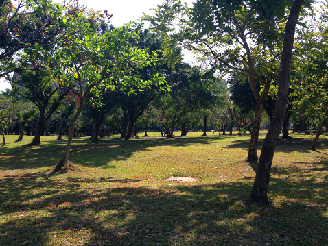
 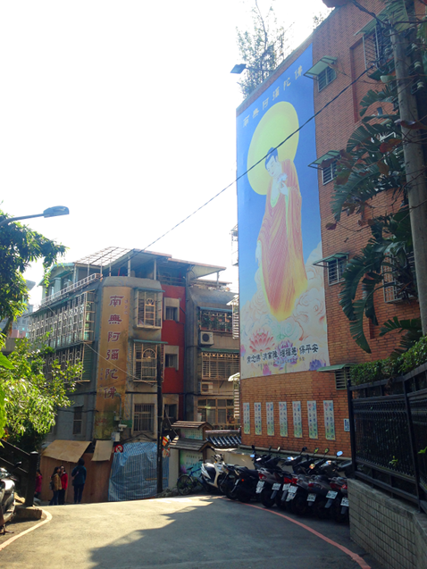
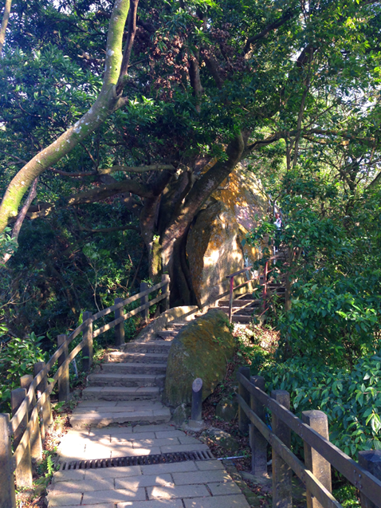
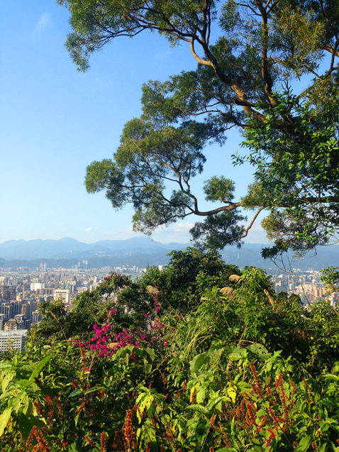
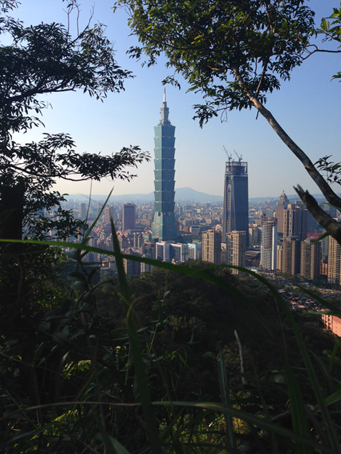
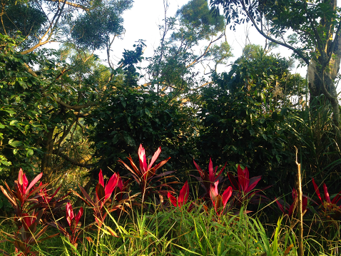
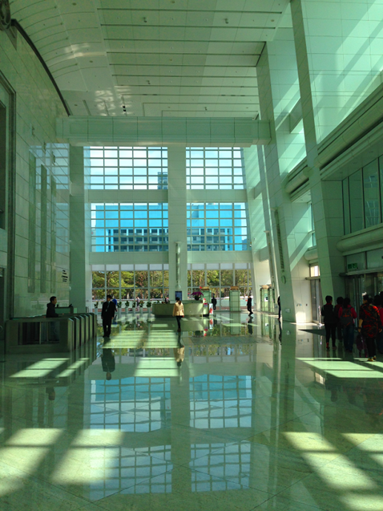
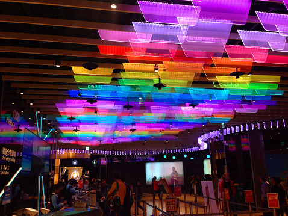
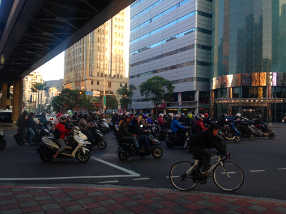
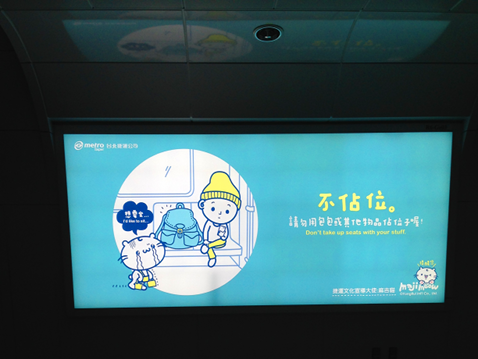
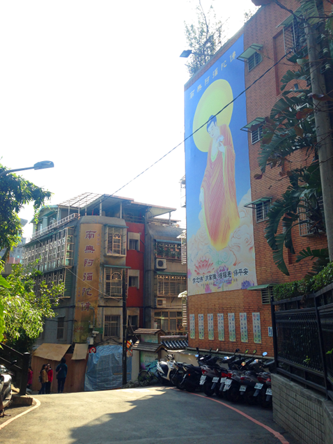
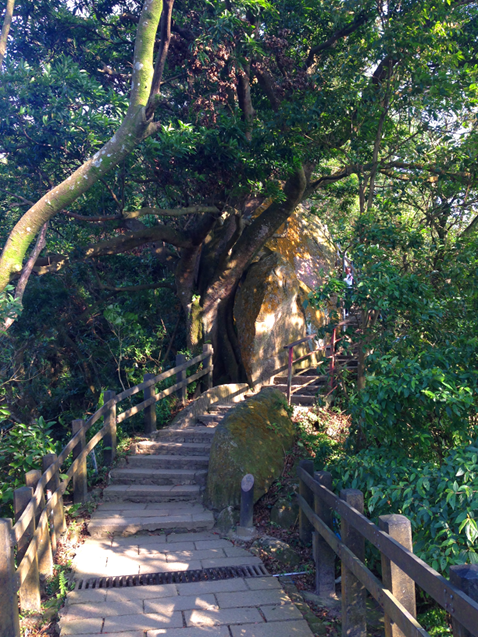
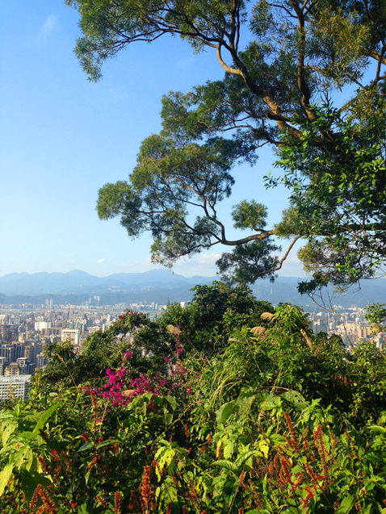
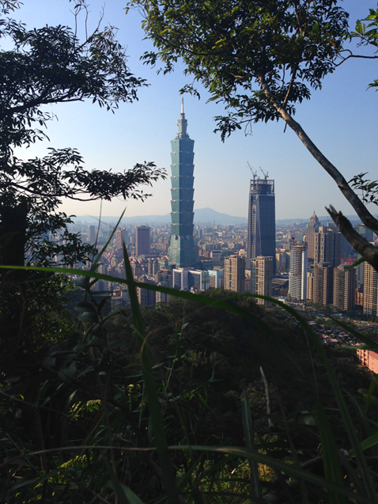
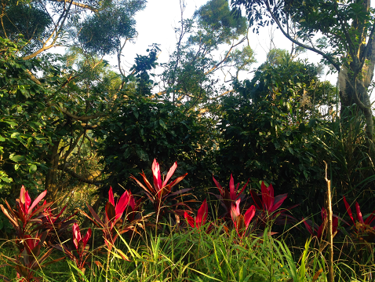
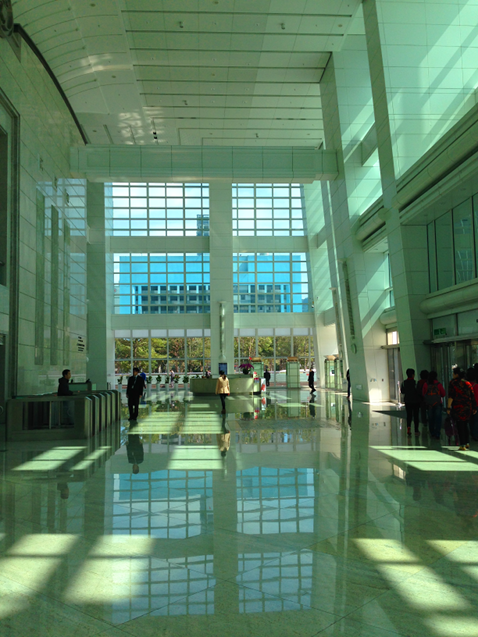
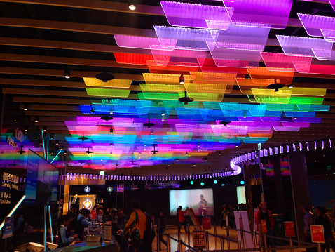
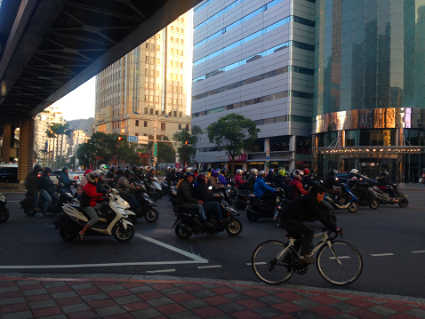
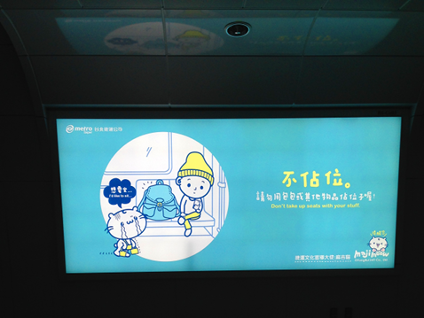
Day 4 (2017-02-15)
Started the day early with a visit to the National Taiwan Museum, only a few steps away from our hostel. This is the oldest museum in Taiwan; it’s a handsome building and a well-maintained relic of Taiwan’s Japanese era. It houses four Taiwan-centric wings, covering anthropology, earth science, zoology, and botany; we enjoyed each of them, despite the museum labels being written primarily in Chinese.
Our next destination was Jiufen, a mountain village overlooking Taiwan’s northeastern coastline.
We headed north to Taipei Main Station. Once inside, we followed signs for TRA down to the basement level. To get to Jiufen, we first needed a train to Ruifang; we went over to platform 4 and took a northbound train. A 45-minute scenic ride brought us to Ruifang Station. From there we followed signs for Jiufen and exited the station. Crossed the street, took a left, kept walking; eventually we spotted a bus stop next to a police station. A Keelung Bus pulled in with a destination sign that read “Jiufen”; we were very pleased with ourselves.
Bus ride to Jiufen was entertaining; sharp turns and a steep ascent, gripping the handrails, looking out at the gorgeous Pacific coast to our left and majestic Keelung Mountain ahead.
Got off the bus at Qiche Road. Followed the masses up the hill and into Jishan Street (aka Old Street): a narrow winding pedestrian alley draped with Chinese lanterns, filled with little stands hawking souvenirs and snacks. Decidedly charming. There’s a shop devoted to adorable ceramic Japanese fortune cats; another offering handcrafted ocarinas (and the occasional live performance). As for food, you’ll find the typical night market fare here, with an emphasis on Taiwanese and Chinese sweets: pineapple cakes, mooncakes, dessert soups, shaved ices, jellies.
We strolled the street for a while, taking detours here and there; paths giving way to tiny alcoves and staircases, ornate stainless steel security doors and potted gardens, quaint tea houses and Fushan Temple. This sort of spontaneous wandering is addictive.
For lunch, we backtracked to an inn we passed earlier on Jishan Street: Chiu Chunt Dint. We both had hearty vegetable stew with a side of brown rice. Portions were gigantic.
Back to Qiche Road. Continued uphill, approaching Keelung Mountain Hiking Trail. Found the trailhead marker: a white stone pillar beside a white stone staircase.
Initial ascent of this hike is beautiful: a canopy of trees filtering sunlight; thick, vibrant azalea shrubs; moss-covered recesses in the cliffside serving as tombs for cremation urns. Midway the climb steepens and the steps change from concrete paver to cobblestone to jagged rock. Conquering each stairway brings yet another into view. Along the way there are three pavilions with seating and much-needed shade.
At the peak — a nearly 2,000-foot elevation — the air is pristine. Temperature drops, wind howls, and the panoramic view is awe-inspiring. Every direction demands attention: behind is a bird’s-eye view of Jiufen, on either side are craggy shorelines and islets, ahead is nothing but vast blue ocean meeting blue sky. We spent maybe an hour up here, maybe more.
On the way down we spotted what we thought were peculiar-looking huts; upon closer inspection, they turned out to be colorful mausoleums scattered across the north face of a hill. There was something whimsical about this setting.
Headed back down Qiche Road, made a left onto Qingbian Road, then another left onto Shuqi Road. By this time the sky was dark and the gorgeous A-Mei Tea House was glowing red with Chinese lanterns. This is the main attraction of Shuqi Road; suddenly the narrowing alley opens up to a bustling square with hundreds of people gawking at a tea house, (falsely) rumored to have inspired Hayao Miyazaki’s Spirited Away. It’s a lovely place to be but the crowds are relentless. We quickly visited the distinguished Shengping Theater, then squeezed our way up the stairs and slipped into a penetrant alley (dim/damp underground rock tunnel snaking between buildings; really neat). We ended up in someone’s backyard.
Time to go. Wandered over to the bus station and took the Keelung Bus back to Ruifang Station; from there we took the train to Taipei Main Station. Short walk back to the hostel.
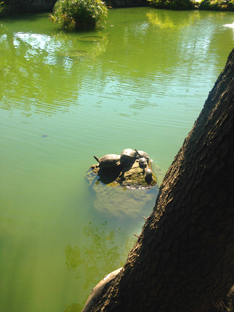 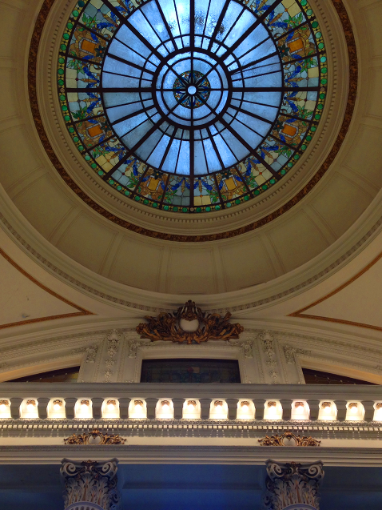 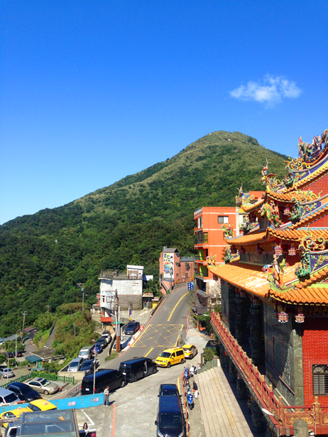 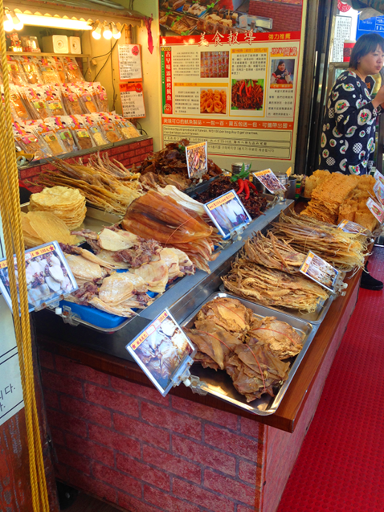 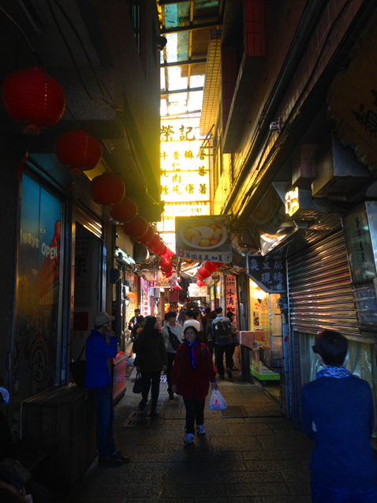 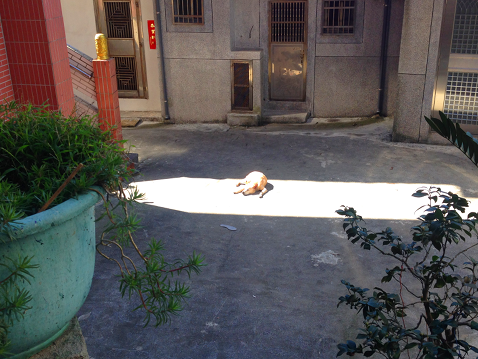 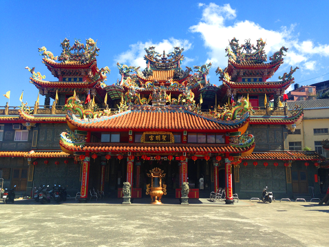 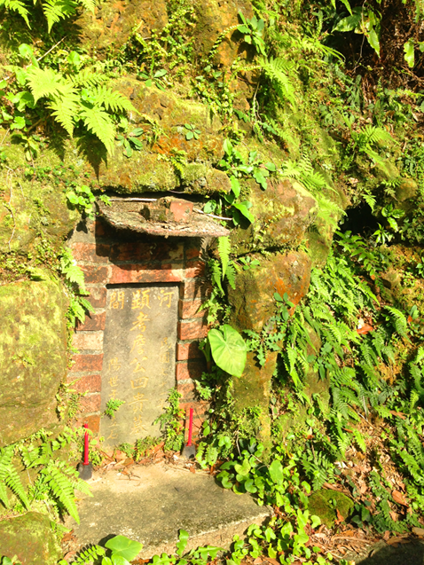 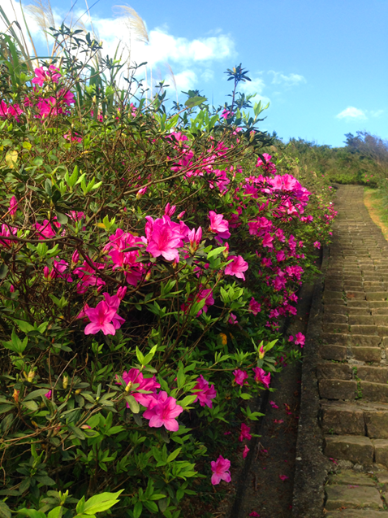 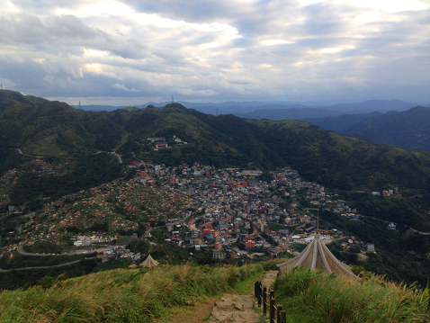 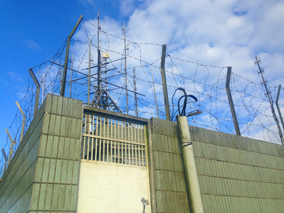
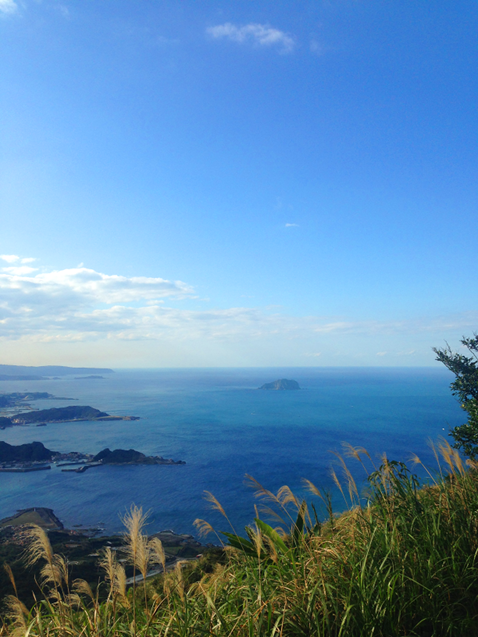
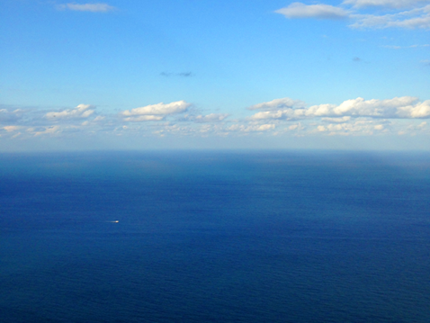
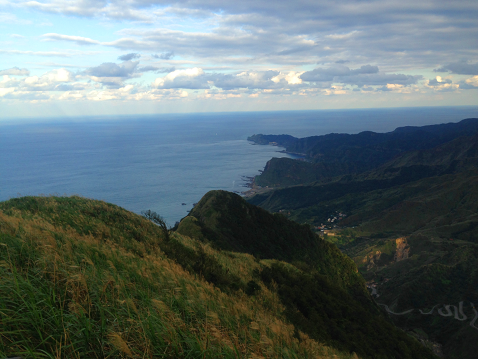
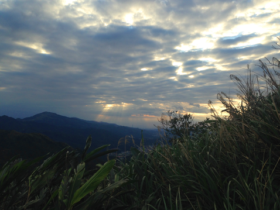
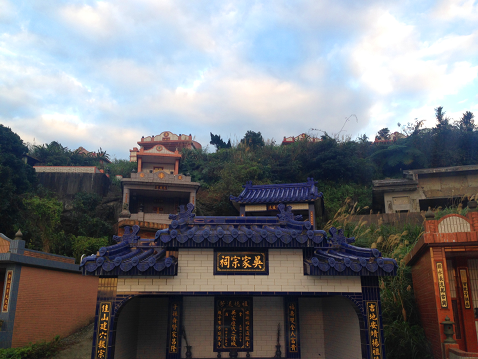
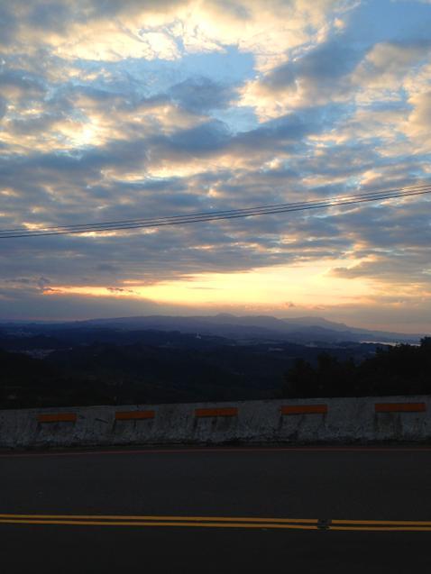
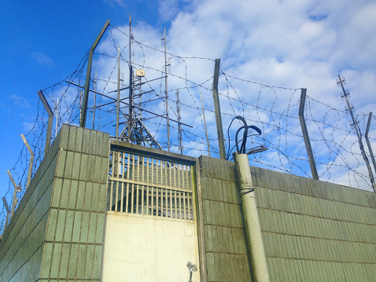
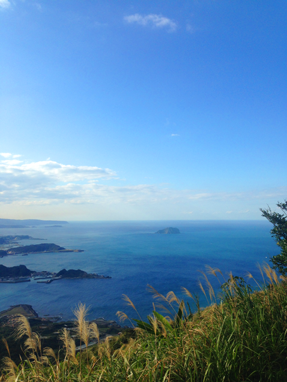
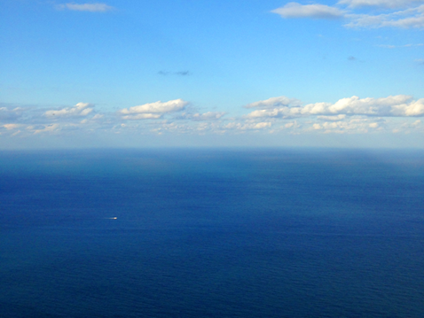
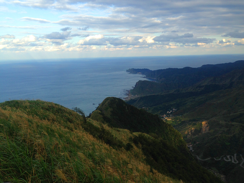
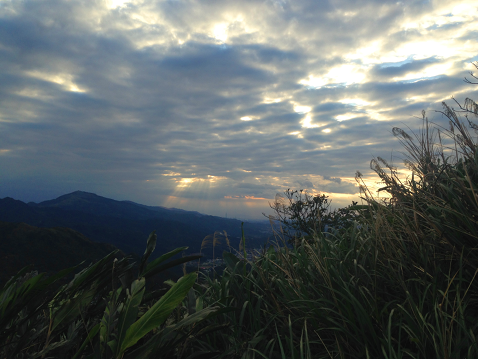
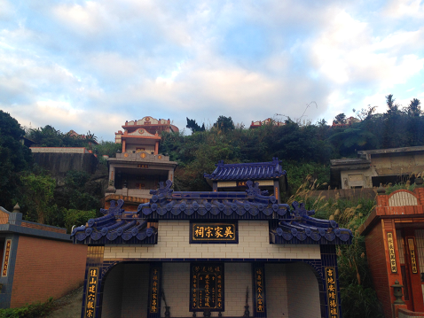
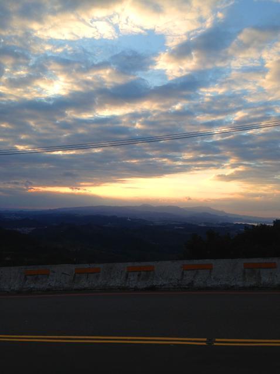
Day 5 (2017-02-16)
First stop of the day was Maokong, a historic tea village perched atop wooded highlands.
Walked to NTU Hospital Station, took the red line to Daan Station. Transferred to the brown line and went all the way down to Taipei Zoo Station. We enjoyed the ride; this line is entirely aboveground and driverless, making for some nice views of the city at the head of the train.
Stepped out of the station and turned left toward Maokong Gondola Taipei Zoo Station. Maokong Gondola is a gondola lift providing scenic/convenient transport to Maokong. We went inside and queued up for a “crystal” cabin (glass floor). Wait time was around 15 minutes.
Out on the gondola the views are incredible: 360 degrees of Taipei skyline and surrounding green mountains. Looking down beneath our feet we saw treetops and tea plantations passing by. Hundreds of feet aboveground, encased in the glass of the gondola, sounds are muted and movements are light; very peaceful up here.
Got off at the last stop: Maokong Station. Spent some time exploring the area. Crawled inside an old charcoal kiln, watched a lady sun-drying tea leaves on her patio, chased butterflies, bought some oolong tea to take home. This is a sleepy village; nice for a stroll.
Stumbled upon what we hoped was the trailhead for Yinhe Cave Hiking Trail. Through the gate, we spotted a cat tracking us from behind some bushes; she leapt out of hiding and led us up the stone path, looking back every few seconds to check on us. At the top the path branches off into several winding dirt roads running through vast tea fields. This was the most rural we had seen Taiwan, and it was lovely.
Signs finally confirmed that we were indeed on Yinhe Cave Hiking Trail. Open field narrowed into thick wilderness. We heard the calls of exotic birds; saw massive colorful spiders and their webs — several feet in diameter — stretched between trees; noted the endless variety of trees and shrubs, all fighting for their share of sunlight; passed gardeners tending their lively gardens and admired the quaint shacks they lived in; crossed aging bridges over murmuring streams filled with miniature giant’s kettles; brushed our hands along mossy rock face.
Deep into the trail a refreshing mist falls from the sky, the air is damp, and the stone steps are covered in algae. For the first time we were sharply descending the mountain; this ultimately gave way to a clearing, and there we found Yinhe Cave.
Yinhe Cave is a remarkable sight: a rustic temple built right into the cliffside, a sparkling waterfall spilling over the ledge, a mountainside all shrouded in yellow-green fur. This is organic architecture at its most beautiful; this place is positively consumed by nature.
Up the cracked staircase, down the musty hall, through the tiled arch. This room, shrine to Buddha, was so meticulously kept by somebody — incense was burning, flowers were fresh, floor was swept, everything in its place — yet there was no sign of anybody in the cave, in the clearing, or in the last half of the trail. There was something self-preserving or enduring or timeless about Yinhe Cave; it was enchanting. We carefully browsed, noting the intricate tilework, the bodhisattva statues, the bare rock ceiling, the kau cim divination tools.
Another arch, another hall, another staircase. We were outside, behind the waterfall, looking out at the extraordinary landscape of cascading forested hills. At the top of this stretch is a striking statue of a Chinese deity hiding in an algae-coated alcove.
Sat here for a while enjoying the view, listening to the falling water, smelling the clean air, watching caterpillars stroll by.
Eventually we went back to the center of Maokong for a late lunch. We ate at Longmen, a restaurant situated on a cliff overlooking the city. We ordered a pot of oolong tea, tea fried rice, and steamed tofu with vegetables. Everything was excellent, but the tea was especially lovely (light and fragrant).
By the time we took the gondola down, the sun was going down too; it was later than we had hoped. Still, we were determined to visit Beitou, Taipei’s northernmost district famous for its hot springs. Starting at Taipei Zoo Station, we took the brown line up to Daan Station and transferred to the red line. From there we took the red line up to Beitou Station. Here we transferred to the tiny pink line with only one stop: Xinbeitou Station. This trip took well over an hour, leaving us little time to explore Beitou.
We planned on visiting Beitou Hot Spring Museum, Plum Garden, Millennium Hot Spring, and Thermal Valley but they were all closed. Still we wandered the streets and enjoyed what we could: a walk through Beitou Park, bridges over steaming water, pungent sulfur in the air, the gorgeous Beitou Public Library. As we continued up Zhongshan Road, we noticed hot vapor drifting from the street gutters; we couldn’t resist sticking our hands in the near-scalding spring water. Went around behind Thermal Valley to see the thick white plume rising from the spring.
Back to Xinbeitou Station; pink line to Beitou Station, then red line to NTU Hospital Station. Time for bed.
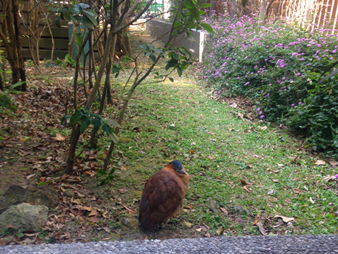 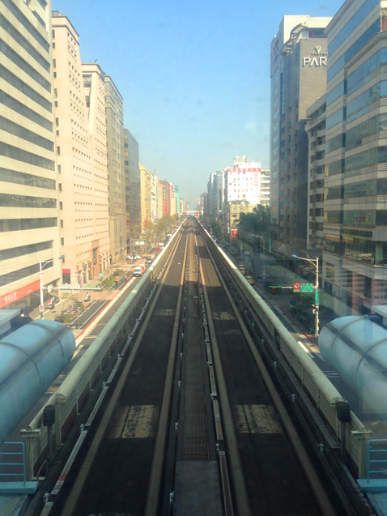
Day 6 (2017-02-17)
This was a day to visit Pingxi, a small rural town east of Taipei, known for its Chinese sky lanterns.
Started out at Taipei Main Station; similar to our trip to Jiufen, we went down to the basement level and over to platform 4 to take a northbound train to Ruifang. Inside Ruifang Station, we transferred to the Pingxi Line. This ride was beautiful; it cuts right through the countryside with views of sprawling farms, rustic villages, and Keelung River. Only downside was the trip took longer than we expected: over 2 hours in total.
Upon arrival, we walked through the station toward Old Street. Pingxi Station’s outer wall is lovely; it’s decorated with hundreds of hanging bamboo tubes, each one inscribed with a wish. Old Street begins with travelers sending floating lanterns covered with wishes into the sky, right alongside the train tracks; we watched a few take off. It is a beautiful Taiwanese tradition but becoming increasingly commercialized, causing some legitimate environmental concerns. Throughout the day we found several downed lanterns littering the forests just outside town.
As we continued, we noted a certain run-down charm about Pingxi; its infrastructure and housing are visibly battered from Taiwan’s persistent northeast monsoon, and its design is an incoherent patchwork of influences spanning the last century.
Old Street goes on with its cobblestone alleys, lined with shops and eateries, intersecting with Keelung River here and there. We explored for a bit; watched ladies making baozi, smelled amaranth greens drying in the sun out on the sidewalk, stumbled into a cluster of abandoned houses. Eventually we found the wildly inconspicuous trailhead for our final hike: Xiaozi Mountain Hiking Trail.
Hike begins with a seemingly endless series of stone staircases slithering up the mountain; vegetation was dense and deep green, air was misty and chill. Along the way we spotted a gaping crevice between two towering rock walls; walked inside and found a lovely little shrine hiding from daylight. Up a little further the path opened wide to a stunning clearing: several paths — steep as ladders — branching off to different mountains; tiny bridges over tiny streams; roots and vines hanging above our heads, everything within our reach covered in moss.
Up and to the right we saw a wide-mouthed cave that looked intriguing, so we started toward it. Inside we found another shrine, this one with several bodhisattva statues lining a deep alcove; many of these were severely weathered with time and hardly distinguishable. Looking out from within the cave we saw Xiaozi Mountain, rising from the forest like a thumb from a fist; a magnificent sight. Went back down and took the leftmost path toward Xiaozi Mountain.
From here on, the sharply-ascending trails are lined with steel cable threaded through steel stakes for support. We continued the climb, slowly circling the mountain, weaving around boulders and brush. Headed over to the edge of a cliff, jutting out from the mountain like a bow from a ship; here we had a perfect view of the sky lanterns floating up from Pingxi and drifting off to the west.
Ahead was the final ascent to the peak, a combination of steps and ladders. This was an exhilarating climb. Our bodies were parallel to the slope, at some points leaning back against the wind as we pulled ourselves up. At the top, we were greeted by two smiling porcelain bodhisattvas. Majestic Cimu Mountain and Putuo Mountain were at eye level. Peak itself is no larger than a bathtub; from every angle we were never more than a few feet away from a precipitous drop into the trees below. It was an incredible, vertigo-inducing view. We found it difficult to leave.
On the way back to town, we both had an unshakable urge to dine at Din Tai Fung once more; we sprinted to Pingxi Station and caught the next train out. From there to Ruifang Station, then Taipei Main Station. Got on the metro, red line to Taipei 101/World Trade Center Station. Inside Taipei 101, we took a number for Din Tai Fung and were seated rather quickly. This time we were a bit more adventurous with our menu selections: stewed kao fu, stir-fried water spinach, vegetable buns, vegetable dumplings, and spicy noodles. This was the best meal we had in Taiwan.
Walked around the mall for a while, then back to Taipei 101/World Trade Center Station. Took the red line to NTU Hospital Station. Dragged our worn-out, well-fed bodies back to the hostel.
Day 7 (2017-02-18)
Woke up to the only cloudy day we’d seen all week. This was our last day in Taiwan, and we had an early flight to catch.
Walked briskly to Taipei Main Station. Inside, we followed signs for the East 3 exit. From there we took the Kuo-Kuang bus to Taoyuan International Airport.
Remainder of this story is no fun; another miserable, 22-hour, three-legged flight back home.
Although we did have some fantastic vegetable curry at Tokyo Food Bar in Narita International Airport.
Some closing comments
Taiwanese people are among the friendliest we’ve ever met. Their hospitality is unmatched. On several occasions complete strangers went out of their way to help us.
We will be returning to Taiwan next year.
We vowed never to take a three-legged flight ever again.
All restaurants mentioned above were able to accommodate a vegan diet (some with minor menu adjustments).
Jeans/t-shirt/light jacket were appropriate attire for most weather we encountered.
We didn’t bother getting a prepaid data SIM card during our stay; WiFi was prevalent enough throughout Taipei for our needs.
To navigate the city, we downloaded a map of Taipei from Google Maps for offline use; from there we could search for locations and get turn-by-turn directions with no data required.